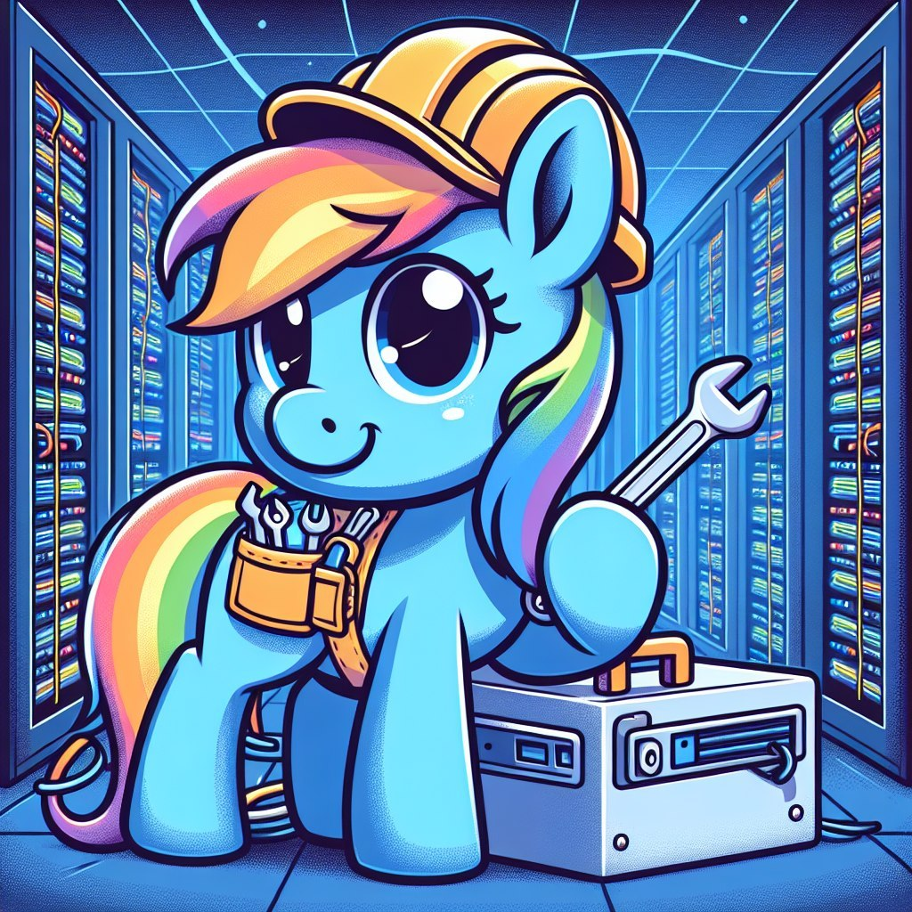
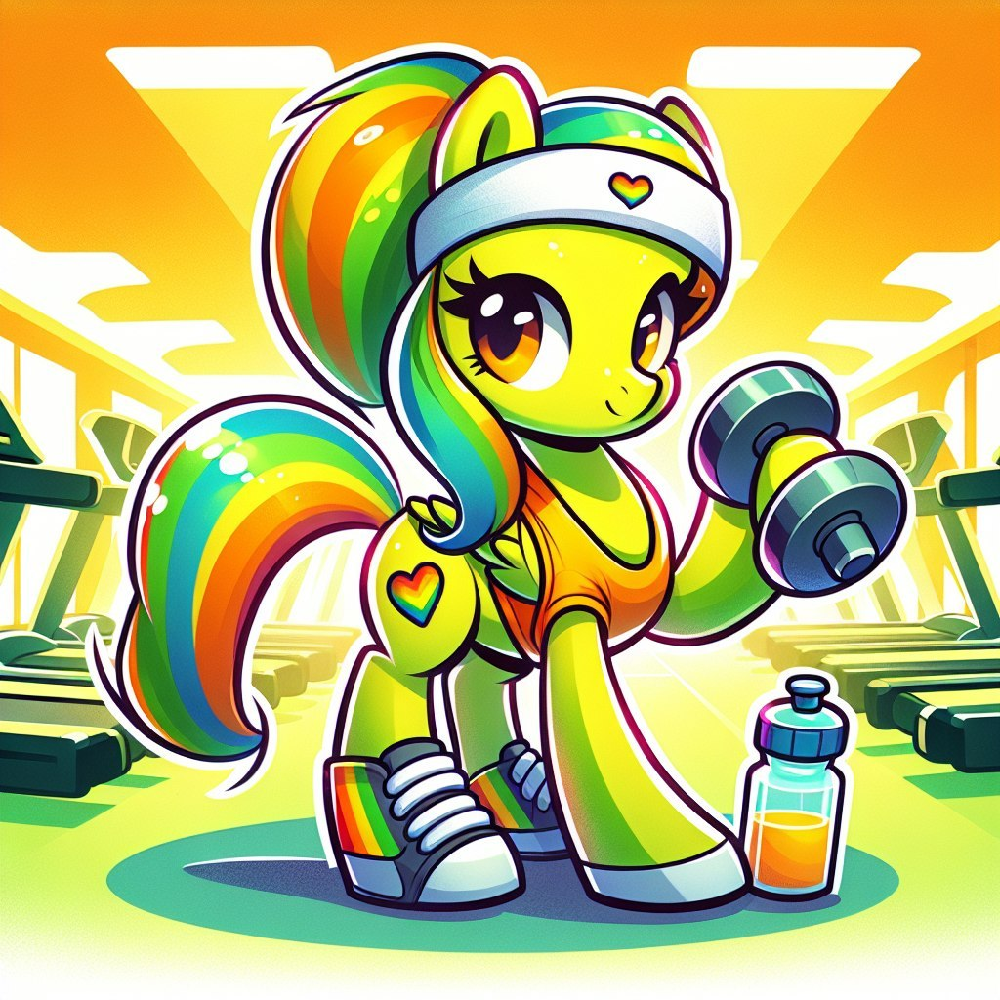

🦞 A小蝦（系統蝦）
橘紅色
船長
一隻可愛卡通小馬，身體橘紅色，鬃毛和尾巴是彩虹漸層色，頭戴海軍船長帽（金色錨徽與繩飾），戴著飛行員護目鏡，站在遊艇甲板上，背景是夕陽暖色天空與遠處船桅，高質感 3D 絨毛渲染，溫暖悠閒有質感的氛圍

💰 發財蝦（財務蝦）
黃色
工程師
一隻可愛卡通小馬，身體黃色，鬃毛和尾巴是彩虹漸層色，頭戴黃色工程師安全帽附頭燈，腰間工具腰包（露出扳手和鉗子），手拿大型扳手，站在伺服器機房/數據中心走廊，兩側有機櫃和彩色 LED 狀態燈，專業可靠又可愛的工程師風格

🏃 健康蝦（健身蝦）
藍綠色
教練
一隻可愛卡通小馬，身體藍綠色，鬃毛和尾巴是彩虹漸層色，頭戴白色運動頭帶（附小愛心標記），穿運動背心，腳穿彩虹條紋運動鞋，手拿啞鈴，旁邊有水壺，站在現代健身房室內，背景有跑步機和健身器材，活力健康陽光動感可愛卡通風格

🧠 知識蝦（學習蝦）
紫色
魔法師
一隻可愛卡通小馬，身體紫色，鬃毛和尾巴是彩虹漸層色，頭戴魔法師帽子（帶星星裝飾），戴著小小的圓框金屬眼鏡，坐在圖書館書桌前，周圍堆滿彩色書本、鍵盤和筆，背景是溫暖的木質書架和柔和的檯燈光，知識探索博學風格可愛卡通

🦐 家務蝦（生活蝦）
淺粉紅
家事達人
一隻可愛卡通小馬，身體淺粉紅色，鬃毛和尾巴是彩虹漸層色，戴著粉色橡膠家事手套，腰間掛著各種清潔工具，拿著小拖把，站在舒適的客廳，背景有溫暖的窗台陽光和整齊的書架，清新家務可愛卡通風格